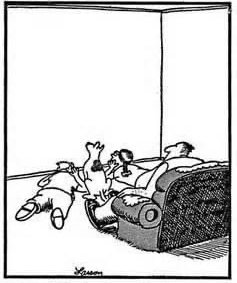

"Nothing real can be threatened. Nothing unreal exists." --A Course in Miracles
My friend’s husband is having an affair with a woman at work.
Unsurprisingly, my friend is distraught. She vacillates between trying to force herself to tolerate his behavior, and trying to force herself to leave. Her friends offer similarly conflicting advice - Leave him! Do everything he asks and just be a better wife!
But she won’t be doing anything for a while. She is frozen in place.
Whatever spiritual understanding she may ordinarily have had, whatever meditation, inquiry, or hard-sought equanimity- that’s all out the window.
Which is common for so many of us when faced with painful situations. Life circumstances have a way of generously helping us forget everything we know.
So perhaps my friend can be forgiven for not noticing that while she’s slogging through her difficult days, she’s been literally watching a mental movie.
The same movie that almost all of us mistake for daily life.
It’s the movie showing us the already cooked dinner, while we’re standing in front of the veggies in the grocery store. It’s the film about our kids coming out of lockdown running unschooled through life like wild wolves, while they're happily playing video games as we wash the dishes. It’s the conversations and arguments we have with people who aren’t there, while standing in the shower.
Lying safely in bed, we see ourselves homeless and broke, or dying alone, or going crazy and being locked up. We picture the husband choosing her over us.
We “see” ourselves.
We picture life. We literally watch ourselves live.
Our movies also have a know-it-all, Morgan Freeman-like narrator, who helpfully intones things like, “You blew it. You shouldn’t do that. You’re doing this wrong. You're wasting your life.”
And then for extra fun, we picture the husband smiling at stranger and Morgan says, “See? This means you are unattractive and unlovable.”
Mental images come to mean something- something about us.
Because of course it’s always about us. How else can we thoughtfully be self-defined and labeled in various miserable ways: Loser, unlovable, bitch, failure, bad person.
As if any identity, based on any imagined image, can be real. As if any sound contains meaning. As if meaning is ever anything more than a concept.
We pretty much never notice that we’re watching a movie.
We certainly don’t notice that if we’re able to see this movie, we can’t actually be in it too.
That can't be us in the movie.
After all, there’s only one of us.
So if we’re not visual representations, if we're not stand-ins on a screen, then we’re… well, what?
Whatever it is, it’s not sad, scared, unsafe. It’s not opposed to movies about cheating husbands, foreclosed mortgages, viruses, politics, crying children.
I mean, it's safely in the theater, enjoying the movie experience.
Which is why it can be amazingly calming to see that we are not the scared screen character who might be losing money, husband, health.
Turns out, de-identifying with the delusion that what we are is a mental movie image, feels better.
Perhaps because that watching viewpoint is closer to the truth.
Though it may not be the whole picture.
Because sitting as a watcher in a theater creates a me, places us in a location, solidifies the observer, and separates us from the story on the screen.
Which feels off too. After all, where does the observer end and the movie begin? Where’s the dividing line?
Maybe there isn’t one.
Because maybe we’re all of it.
Maybe we’re all the film characters, and the narrator, and the watcher experiencing all that. Maybe we're also the screen, the projector, and the colors, shapes, and contractions on the screen.
So is it possible to lose a husband if we are him, too?
Now of course, when we’re in the middle of misery, we’re not likely to want to step outside the film just to contemplate, Maybe I’m not what I think I am. And of course we’re always perfectly free to never stop watching the movie and thinking that it’s the Me.
It’s just that, in those rare moments when we see there’s no divider between us the character, us the watcher, and us the movie itself,
Then we gain some space, some clarity, some truthier truth than a movie can ever provide.
And then we don’t need film characters to follow a different script, or make the movie go in a different direction, just so we can integrate what we know with what we are.
Husbands can do what they do. Feelings can come and go.
We get to just BE.
As everything.
Which is mind-blowing.
And feels a lot better.
And makes us
a whole lot more
than we thought.
Click here to get your every week.
"You are the Buddha." --Adyashanti
“This place is a dream. Only a sleeper considers it real.
Then death comes like dawn, and you wake up laughing
at what you thought was your grief.” --Rumi
